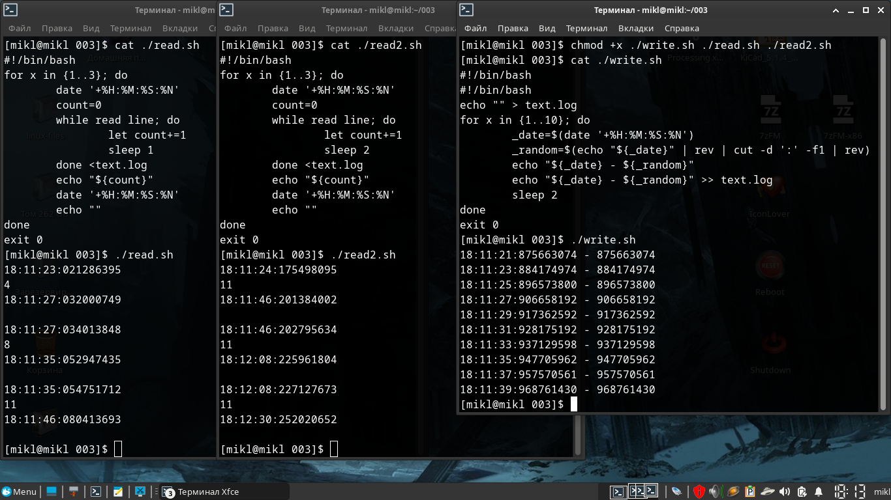

Blacklists.
Большое руководство по чёрным спискам ip адресов.
Для начала давайте с вами определимся с основными понятиями:
- Что такое угроза?
- Что такое признак атаки?
- Как узнать о том, что сервер находится в большой опасности?
- Что вообще такое фаервол, и какие они бывают в Linux-ах.
- И многое другое ...
После чего посмотрим каким образом блокировать и разблокировать угрозы безопасности.
Далее определимся с пониятием черных и белых списков и зачем они вообще нужны.
Посмотрим с вами на реальные примеры и виртуального и реального (VPS) серверов.
И наконец, на примере виртуального сервера в разы усилим его безопасность.
Итак, приступим.
Оглавление
1. Что можно сделать с украденными личными данными?
Однажды человека может разбудить неожиданный звонок с требованием вернуть долг, а в почтовом ящике окажется повестка в суд. Но кредитов он не брал, закон не нарушал.
Чтобы взять кредит в крупном банке, одних паспортных данных недостаточно: потребуется хотя бы копия документа. А вот оформить микрозаем в интернете можно с помощью сведений с первых страниц паспорта — номера, даты выдачи, кода подразделения и места рождения.
Обратившись в несколько микрофинансовых организаций, мошенники получат существенную сумму на свои карты — а затем исчезнут, оставив жертву с долгами.
Пользуясь данными чужого паспорта, мошенники регистрируют фирму-однодневку. Так они безнаказанно творят темные дела: уклоняются от налогов или собирают с обычных людей деньги за предзаказ дорогих товаров.
Когда обман вскроется, мошенники заберут деньги и останутся вне подозрений — а вот владельцу паспорта придется объясняться с полицией.
Некоторые интернет-магазины предлагают клиентам покупать товары в рассрочку: чтобы забрать вещь, нужно указать паспортные данные, а оплатить покупку можно позже.
Это на руку мошенникам: они заказывают товар по чужому документу, а курьеру говорят, что покупку получит другой человек — не владелец паспорта. Предупрежденный курьер спокойно отдает дорогую вещь аферисту, но расплачиваться за нее должен ничего не подозревающий владелец паспорта.
Если у «заемщика» хорошая кредитная история, рассрочку, скорее всего, одобрят. Правда, техника попадет в руки мошенникам, а расплачиваться придется вам.
Зная ФИО жертвы и адрес регистрации, мошенники подделывают квитанции на оплату штрафов от государственных органов.
По номеру паспорта на сайте налоговой службы легко узнать ИНН: этот номер поможет придать письму из налоговой убедительности и сообщить жертве об огромной задолженности.
Чтобы оплатить «штраф» и избежать суда, аферисты просят как можно скорее воспользоваться вложенной квитанцией.
Мошенники, которые обманывают людей в интернете, часто просят жертв выслать им деньги на электронный кошелек — поэтому аферистам выгодно использовать чужие данные. Так вся ответственность за мошенничество ляжет на плечи подставного владельца кошелька, а настоящие преступники останутся незамеченными.
Чтобы изготовить паспорт, которым преступник сможет полноценно пользоваться, недостаточно подделать водяные знаки — паспорт с фальшивыми данными не пройдет ни одну проверку в электронных базах.
Поэтому мошенники используют информацию из настоящего документа, а фотографию в фальшивый паспорт вклеивают свою. По паспорту с реальными данными, но фотографией афериста можно брать кредиты в мелких организациях, не вызывая подозрений, — а отвечать по долгам придется владельцу настоящего паспорта.
Выяснить номер телефона по паспортным данным несложно. Многие указывают его на страницах в соцсетях или на страницах-визитках, которые можно найти, просто набрав имя и фамилию жертвы в поисковике.
Мошенник размещает объявление о продаже дорогой вещи по бросовой цене: утверждает, что надо продать срочно, поэтому и скидка большая. А так как цена привлекательная, то и желающих много, поэтому аферист настаивает на предоплате: чтобы не терять время, если покупатель вдруг передумает. В качестве гарантии липовый продавец высылает скан паспорта — разумеется, чужого, а после получения денег перестает отвечать на сообщения.
Это только цветочки, а бывают и ягодки!
Это только для того, чтобы вы относились к безопасности вашего сервера серьёзно! Даже если у вас простенький сайт без каких-либо конфидециальных данных.
2. Введение.
Немного напугал, перейдём к теме серверов и их безопасности.
Защита информации становится необходимостью для предотвращения потенциальных угроз и минимизации рисков.
Защита информации обеспечивает личную безопасность и приватность, предотвращает утечку личных данных и защищает от возможных мошеннических действий.
Под термином «угроза» следует понимать любое программное средство, косвенно или напрямую способное нанести ущерб компьютеру, сети, информации или правам пользователя (то есть вредоносные и прочие нежелательные программы). В более широком смысле термин «угроза» может означать любую потенциальную опасность для компьютера или сети (то есть ее уязвимость, которая может быть использована для проведения хакерских атак).
Сетевая атака – это вторжение в операционную систему удаленного компьютера. Злоумышленники предпринимают сетевые атаки, чтобы захватить управление над операционной системой, привести ее к отказу в обслуживании или получить доступ к защищенной информации.
Следует понимать, что защита от взлома серверов — это комплекс мер, в том числе подразумевающий постоянный мониторинг работы сервера и работу по совершенствованию защиты. Невозможно защитить сервер от внешнего доступа раз и навсегда, ведь каждый день обнаруживаются новые уязвимости и появляются новые способы взлома сервера.
Основной признак попыток — «подозрительная активность» в логах. Это могут быть регулярные попытки подключения с разных IP-адресов, запросы к различным портам сервера, запросы на те или иные ресурсы.
Лог (log) — это текстовый файл, куда автоматически записывается важная информация о работе системы или программы. Чаще всего говорят о логах сервера. Их записывает программное обеспечение, которое управляет внутренней частью сайта или онлайн-системы. Лог-файл — своеобразный журнал событий.
В логи записываются сведения об ошибках, действиях пользователей и других событиях, которые происходят на сервере или в системе.
Чтобы обнаружить угрозу, необходимо регулярно анализировать все логи, начиная с системных, и заканчивая логами различных утилит, которые работают на вашем сервере.
Однако, анализировать логи вручную - не самая лучшая затея, хотя и вполне возможная. Для анализа логов существуют специальнные утилиты автоматического анализа и блокирования несанкционированного доступа. В простейшем случае они анализируют логи на подозрительную активность и при необходимости блокируют все попытки несанкционированного получения доступа на те или иные ресурсы сервера.
Что значит несанкционированного?
Несанкционированно - осуществляемый без санкции, официального разрешения. Т.е. в нашем случае при самом простом способе прямого входа на ваш веб-сайт через веб-браузер вы увидите в логах действительные статусы состояний сервера. При любой попытке обойти формы ввода логина и пароля, даже напрямую вручную через браузер, в логи будет выведен совершенно другой статус состояния вашего сайта или всего сервера. При этом там же будут отображены все попытки запросов и все адреса и порты, на которые происходили запросы. В случае же использования любых утилит - не браузеров - эта информация сразу же отобразится в логах.
Обычно любая утилита или программа (не важно Windows или Linux) во время запроса обязательно вставляет в посылаемый на сервер запрос (пакет) минимальную информацию о себе. В случае же хакерских утилит такой информации не будет.
Посмотрим на частичный лог одного веб-сайта. IP-ардеса и некоторые другие данные лога я закрасил в целях безопасности.

Мы здесь можем видеть - что некий IP-адрес (пользователь, закрашен в самой левой части перед датой и временем) делает GET-запрос. При этом у адреса есть операционная система, и делает он свой запрос через браузер Google-chrome. Ну и соответственно видим дату и время запроса, а также статус состояния сайта, т.е. ответ веб-сайта.
Судя по этой скудной информации мы можем сделать вывод о том, что некий пользователь напрямую через веб-браузер, т.е. санкционированно, обращался к некому веб-сайту.
В последних 2 строках GET-запросы происходили не через браузер и с помощью утилиты Curl. При этом видим также и версию этой утилиты.
В этих последних строках из-за статуса состояния сайта мы можем сделать вывод о том, что запрос хоть и был санкционированный, но не прямой, т.е. не через веб-браузер, и к этому стоит присмотреться.
Существуют утилиты не только для автоматического мониторинга работы сервера и его доступности в интернете, но и оповещения по электронной почте или СМС в случае обнаружения проблем.
Причём располагать утилиты мониторинга доступности сервера в интернете и оповещений непосредственно на самом сервере - не самая лучшая затея, хотя и вполне реализуемая и частенько практикуемая. Практикуемая именно потому что денег на второй сервер только для мониторинга нет. Такие утилиты вполне можно установить на сервер в виртуальной машине, которая будет не доступна из интернета, тем самым защищена. Она же и будет производить мониторинг работы и оповещать в случае проблем. Однако, не все могут оставить работать свой ПК с работающей виртуальной машиной на круглосуточную работу ради одного сервера. Обычно так делают когда серверов много.
Кстати говоря, любые подобные утилиты мониторинга и оповещений вполне можно создать самостоятельно.
Сегодня мы с вами рассмотрим одну из утилит для блокировки вторжений на сервер. Рассматривать утилиты оповещений и мониторинга сегодня мы не будем.
Однако, это не говорит о том, что при использовании утилит блокировок вам не нужно будет использовать утилиты мониторинга или антивирусные средства. Как раз наоборот.
Просто базовое понимание утилит блокировки даст вам понимание того, как запускать все программы и под-программы мониторинга, блокировок и оповещений одновременно так, чтобы данные получаемые из логов были на тот момент актуальными и одинаковыми для всех утилит. Иначе вы можете столкнуться с тем, что для одной из программ в логах у вас будут одни данные, для другой уже другие. В результате одна из утилит просто не сработает во время. Или вообще пропустит важные данные для обработки результата.
Чем это чревато? Надеюсь, вы и сами понимаете!
Также, этот же момент не говорит о том, что вам всё равно не придётся создавать регулярные резервные копии данных сайта или всего сервера. Потому что взломать можно всё что угодно! Было бы желание. Вот как раз на случай проникновения и/или захвата управления, чтобы иметь возможность быстро восстановить сервер после атаки, как раз и нужны резеревные копии данных.
Помимо описанного, необходимо регулярно следить за обновлениями программного обеспечения и операционной системы сервера. Обновления обычно устраняют уязвимости, которые могут использоваться для проведения атак.
3. Файловый дескриптор.
Файловый дескриптор — это неотрицательное число, которое является идентификатором потока ввода-вывода. Дескриптор может быть связан с файлом, каталогом, сокетом.
Например, когда вы открываете или создаете новый файл, операционная система формирует для себя запись для представления этого файла и хранения информации о нем. У каждого файла индивидуальный файловый дескриптор Linux.
В Linux библиотека libc открывает для каждого запущенного приложения(процесса) 3 файл дескриптора, с номерами 0,1,2.
- Файл дескриптор 0 называется STDIN и ассоциируется с вводом данных у приложения.
- Файл дескриптор 1 называется STDOUT и используется приложениями для вывода данных, например командами print.
- Файл дескриптор 2 называется STDERR и используется приложениями для вывода данных, сообщающих об ошибке.
Если в вашей программе вы откроете какой-либо файл на чтение или запись, то скорее всего вы получите первый свободный ID и это будет номер 3.
Файл дескриптор с номером 255 можете смело игнорировать, он был открыт для своих нужд уже самим bash, а не прилинкованной библиотекой.
Например, откроем консоль с bash и посмотрим PID нашего процесса.
[user@localhost Загрузки]$ echo $$ 11644 [user@localhost Загрузки]$ ls -lha /proc/11644/fd/ итого 0 dr-x------ 2 user users 0 июл 22 08:26 . dr-xr-xr-x 9 user users 0 июл 22 08:26 .. lrwx------ 1 user users 64 июл 22 08:26 0 -> /dev/pts/1 lrwx------ 1 user users 64 июл 22 08:26 1 -> /dev/pts/1 lrwx------ 1 user users 64 июл 22 08:26 2 -> /dev/pts/1 lrwx------ 1 user users 64 июл 22 08:26 255 -> /dev/pts/1 [user@localhost Загрузки]$
Сейчас все 3 файл дескриптора связаны с устройством псевдотерминала /dev/pts, но мы все равно можем ими манипулировать, например запустим во второй консоли.
[user@localhost ]$ echo "hello world" > /proc/11644/fd/0
И в первой консоли мы увидим.
[user@localhost ]$ hello world
Вы можете легко переопределить эти 3 файл дескриптора в любом процессе, в том числе и в bash, например через трубу(pipe), соединяющую два процесса.
Продолжение смотрите в статье: «Файл дескриптор в Linux с примерами».
Нас же интересует немного другой вопрос.
Приведу небольшой пример.
У нас есть некий лог-файл, в который постоянно ведётся запись разных данных. Каких данных сейчас не важно. Например, в лог-файл NGINX-а запись будет производиться только при поступления запроса на сервер и только на тот веб-адрес, который имеется в настройках конфигурации.
Допустим, у нас есть несколько программ в виде коротких скриптов, которые постоянно с разными временными задержками анализируют этот лог-файл.
Возникает логичный вопрос: А одинаковые ли данные у каждого из этих скриптов для анализа?
Проведём небольшой эксперимент. Для этого создадим 3 разных скрипта. Один будет записывать данные в некий предопределённый нами лог-файл, а 2 других читать этот лог.
Файл «./write.sh». Здесь мы будет 9 раз записывать время с секундами и наносекундами в лог-файл «./text.log», но с задержкой между записями в 2 секунды. Т.е. итоговое время выполнения - 18 секунд.
$ nano ./write.sh
#!/bin/bash
echo "" > text.log
for x in {1..9}; do
_date=$(date '+%H:%M:%S:%N')
_random=$(echo "${_date}" | rev | cut -d ':' -f1 | rev)
echo "${_date} - ${_random}"
echo "${_date} - ${_random}" >> text.log
sleep 2
done
exit 0
CTRL + o
CTRL + x
Файл «./read.sh». Здесь мы будет читать наш лог-файл «./text.log», но вместо вывода содержимого будем подсчитать количество строк в этом файле. Читать будем 6 раз с задержкой в 3 секунды. Итоговое время выполнения 18 секунд.
$ nano ./read.sh
#!/bin/bash
for x in {1..6}; do
date '+%H:%M:%S:%N'
cat text.log | wc -l
sleep 3
done
exit 0
CTRL + o
CTRL + x
Файл «./read2.sh». Ну а в этом скрипте мы будет читать наш лог-файл «./text.log», также как и в предыдущем примере, но читать будем 18 раз с задержкой в 1 секунду между чтениями. Итоговое время выполнения, также 18 секунд.
$ nano ./read2.sh
#!/bin/bash
for x in {1..18}; do
date '+%H:%M:%S:%N'
cat text.log | wc -l
sleep 1
done
exit 0
CTRL + o
CTRL + x
Теперь попытаемся быстро-быстро запустить эти скрипты одновременно в разных консолях. Разумеется они будут работать не одновременно. Однако, из-за временных sleep задержек это будет не важно.
Смотрим на результат.

Как видите, во второй консоли, из-за того, что скрипт «./read.sh» долго держит файловый дескриптор открытым, он продолжает читать старый файл, т.е. скрипт продолжает использовать старые данные и не успевает получить новые данные для обработки, в то время как в лог-файл уже была произведена запись и лог был обновлён.
Третий же скрипт «./read2.sh» напротив, полностью справляется с задачей и видит все новые данные.
Проблема чтения данных состоит в том, что практически все утилиты или скрипты анализа лог-файлов могут быть очень разными и сложными, или наоборот простыми. Какие-то из них потребляют мало оперативной памяти, а какие-то напротив - очень много.
Уменьшать время работы одной из утилит ради ускорения обработки данных очень и очень плохая затея! Ведь таким образом вы можете чрезмерно нагрузить и процессор и оперативную память. А если у вас VPS или VDS сервер с ограниченным количеством ресурсов - в результате вы можете просто напросто зависнуть. Да-да, в Linux-е и зависнуть. Это не шутка!
Этот маленький эксперимент должен сказать вам не о том, что необходимо уменьшать время запуска тех или иных программ или скриптов анализа, а о том, что анализировать данные лучше какой-то одной единственной утилитой, и уже в ней, внутри, запускать все остальные необходимые вам внешние скрипты и программы обработки результатов, при обнаружении проблем. При условии, что такая функция запуска внешних скриптов или программ имеется внутри утилиты анализа.
Обычно, у всех программ и утилит анализа имеются специальные макросы для запуска внешних программ или скриптов для обработки результатов или запуска какого-нибудь действия / противодействия в самой ОС.
Если же возможности самого анализа как такового ограничены - тогда да, запуск отдельной программы или отдельного скрипта в системе по таймеру - будет хорошим выходом из ситуации.
Но, тогда вы, скорее всего, будете вынуждены подбирать и калибровать время запуска по таймеру только ради 2 вышеуказанных условий - аткуальность данных и нагрузка на оперативную память.
Актуальность данных подразумевает несколько важных пунктов.
- Как часто обновляется нужный вам лог-файл, т.е. как часто в него записываются новые данные?
- Как часто необходимо анализировать лог-файл?
В зависимости от данных ответов настраивается время таймера.
Нагрузка же на процессор имеет немного более высокий приоритет. Для корректной настройки вам также необходимо будет ответить на пару вопросов.
- Сколько максимально в пике оперативной памяти потребляет ваша утилита или скрипт?
- Как сильно ваша утилита или скрипт нагружают процессор?
Последние 2 вопроса имеют место быть, в случае, когда утилита имеет внутри себя множество различных сложных вычислений. В таком случае стоит задуматься насчет частоты запуска и соответственно об увеличении времени таймера для её запуска.
При этом как именно будет запускаться утилита или скрипт не особо играют роль - будь то системный systemd-таймер или процесс запущенный из под сервиса cron, т.е. crontab.
4. Межсетевые экраны.
Рассмотрим первую линию обороны - межсетевые экраны.
Брандмауэр, фаервол или межсетевой экран – это система, которая выполняет роль защитной стены между глобальным интернетом и устройством пользователя.
Брандмауэр фильтрует всю входящую информацию и не пропускает вредоносный контент и вирусы.
Брандмауэры, как правило, контролируют двунаправленный поток трафика, поэтому представьте себе брандмауэр перед организацией, отделяющий ее от общедоступного Интернета. Он должен иметь возможность блокировать входящий трафик, чтобы попытаться удержать злоумышленников, но он также должен иметь возможность разрешать исходящий трафик, потому что людям нужно просматривать веб-страницы, отправлять электронные письма и иметь связь, которая выходит за пределы сети.
part-5
«» «»
«»
$ Codes # Comment at, the number of #
def myfunc: pass
#!/bin/bash ... script ... # echo "result"
- Blue
- Black
- Reed
- Yellow
- Green
Part-2 H1

Part-3 H1
Ну а сегодня на этом всё. Всем Добра и Удачи!
Copyright © xx.xx.xxxx by Mikhail Artamonov